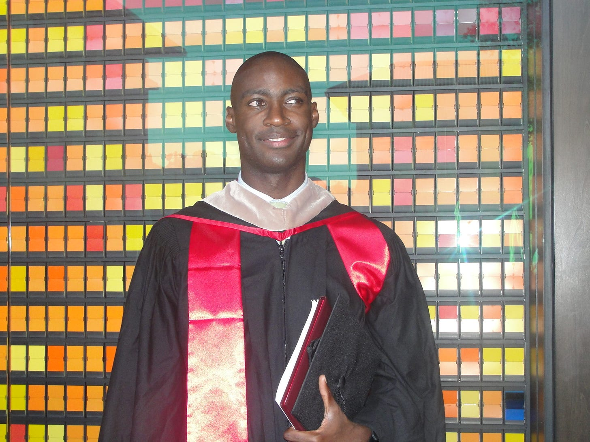

CFO and founder
Chief Financial Officer at SoLo Funds and building JG Holdings.
I remember the day my father graduated from law school. I was six years old, too small to see the stage through the people in front of me, so I watched him on a projector screen from the back of the overflow section. When they announced his name, my mother cheered so loudly that I was embarrassed. His cheering section was just us: my mother, my baby brother, and me.
My father had returned to law school in his mid-forties, balancing night classes, a full-time job, and a young family. My mother was a sixth-grade social studies teacher. They shared a deep commitment to education and made it a cornerstone of my upbringing. They paid me to read books. Summer vacation became an extension of the classroom. At dinner, our assertions were challenged and our opinions had to be defended.
After law school, my father joined the Denver City Attorney's office. Before dropping me at school, we sat in the same corner booth at McDonald's. He drank coffee, I ate hash browns, and we talked. He told me how he used the law to serve the city and helped plan my first run for student council. I did not realize it then, but those conversations were about service, responsibility, and legacy.
My father died from Non-Hodgkin's lymphoma five days after my tenth birthday. But the ten years I had with him shaped me profoundly.
I discovered my talent for writing in seventh grade, recounting Denver Nuggets games in daily journals. I edited my high school newspaper and studied journalism and finance at the University of Missouri. Wall Street did not recruit there, but I found a backdoor in through a career-prep program, and it changed the trajectory of my career.
Years later, I was running a digital media startup when Stanford called. I phoned my mother, who was walking near the monuments in Washington. When I told her, she screamed, "Jamaal got into Stanford!" Strangers heard her and gave her a thumbs up, as if celebrating with her. Stanford GSB, and later Harvard Kennedy School, reshaped my career and worldview.

I began at J.P. Morgan, advising clients on more than $70 billion in transactions. I left Wall Street to build, founded and sold digital media businesses, raised more than $150 million for venture capital funds, and led more than $75 million in acquisitions and venture investments. My work has taken me from trading floors to startup teams, venture committees, classrooms, and boardrooms. Today I am CFO of SoLo Funds, founder and CEO of JG Holdings, a professor, writer, and board director.
My wife and I welcomed twins after six years of trying to become parents. We still say how surreal it is that they are here, that they are ours, and that we get to raise them. Parenthood has expanded my capacity for love and given my life new meaning.
Professional bio
Jamaal Glenn is an executive, investor, entrepreneur, writer, speaker, and board director. He is Chief Financial Officer of SoLo Funds, a community finance platform, and founder and CEO of JG Holdings, an investment holding company and advisory firm. Through JG Holdings, he advises impact investment firms, family offices, philanthropies, and professional-services firms on investment strategy, execution, and corporate governance.
He chairs the board of The Pivot Fund, a venture philanthropy organization that invests in community-led news organizations. He also serves as a board director, treasurer, and chair of the audit committee at LION Publishers, the national membership organization for independent news publishers.
Earlier in his career, Jamaal worked across investment banking, venture capital, media, and technology, including roles at J.P. Morgan, Google, Alumni Ventures, First Look Media, and Schmidt Futures. He also founded and sold digital-media businesses and previously taught finance, marketing, and entrepreneurship at New York University and the City University of New York.
Jamaal is an Obama Foundation USA Leader, a Marshall Memorial Fellow, and a member of the Council on Foreign Relations and the National Committee on U.S.-China Relations. He holds an MBA from Stanford, an MPA from Harvard Kennedy School, and bachelor's degrees in finance and journalism from the University of Missouri.
Selected career chapters


Chief Financial Officer at SoLo Funds and building JG Holdings.
Venture capital, investment strategy, and capital allocation.
Board leadership across finance, media, and mission-led organizations.
Finance, marketing, and entrepreneurship across degree and executive programs.
Board Work
Jamaal brings an operator and investor's perspective to board leadership, helping organizations strengthen financial oversight, manage risk, allocate capital, and make consequential decisions with clarity.
Chairman of the board, leading governance and board strategy for a venture philanthropy organization investing in community-rooted news organizations.
Board director, treasurer, and chair of the audit committee for the national membership organization serving independent local news publishers.
Board service supporting an investigative newsroom focused on inequality and abuses of power.